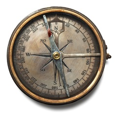

Kusasa is education for tomorrow, today. Paradoxically, it uses 21st century computers and software to immerse learners in a world of mathematics and science similar in some key respects to the ancient world in which mathematics first appeared.
Mathematics was not born as the mathematics taught in schools around the world today. It developed as a way for all of us to think about practical things.
- How to build pyramids, bridges and aqueducts.
- How to predict the weather and the seasons.
- How to build boats.
- How to navigate at sea.
Kusasa empowers learners to experience maths and science concretely. Learners paint objects (such as cars or clouds) in a virtual, software environment. Then, thinking mathematically, learners decide how to make their objects behave as they would in real life, and implement their thinking in an easy-to-learn programming environment.
But Kusasa is not just a nice way to cover some of the mathematics curriculum and some of the science curriculum. Kusasa brings into the compass of what young learners can do, some of the most important ideas in the history of mathematics and science. But it doesn't just enable learners to manipulate objects mathematically. It gives learners an opportunity to experience the simplicity and appreciate the beauty of mathematical thinking by exploring a world of mathematics.